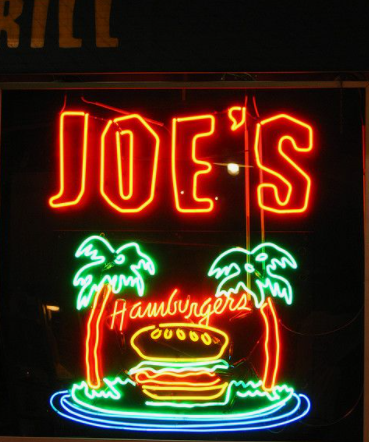

Artistas como Rita Synnove Sharma, Dan Flavin, Bruce Nauman, Mario Merz, Joseph Kosouth, han dejado mucho de qué hablar, con sus espectaculares diseños nos han dado un nuevo tipo de arte minimalista.
Argumetación del Proyecto de Artes 2020
El neón, creo que a muchos les suena; sino, ve y consíguelos, apaga la luz y deja que te fascine con su espectacular luz fosforecente. ¡Haz brillar tu imaginación!
A pesar de que se puso de moda en los años ochenta, su historia viene desde más atrás. Para empezar las primares evidencias de su descubrimiento, empezó en 1800 por el físico Heinrihv Geissler, más tarde en 1898 sir William Ramsay y Morris Travers, le dio nombre a este nuevo elemento. Y por cierto… ¿sabías que neón en griego es nuevo? Que no te sorprenda, hay muchas cosas nuevas que se pueden aprender de él, a pesar de su invención la cosa no fue tan fácil para este nuevo elemento, no fue hasta 1923 que comenzaron a tener importancia en espacio publicitario, todo gracias al químico Georges Claude quien vendió su Producto al concesionario Parckard, y así iniciando la historia de este genial elemento.
Artistas como Rita Synnove Sharma, Dan Flavin, Bruce Nauman, Mario Merz, Joseph Kosouth, han dejado mucho de qué hablar, con sus espectaculares diseños nos han dado un nuevo tipo de arte minimalista.
El neón es un producto fascinante y que en hoy en día no ha pasado de moda. Queríamos mostrar de una manera diferente y luminosa sentimientos como la Nostalgia, la Felicidad y la Ansiedad.
La idea de utilizarlo, fue propuesta por Angie Caldas quien nos mostró esta forma de expresar las emociones; haciendo diseños en la cara de cada uno de los que están en el grupo. Sharma es una de más conocidas en este arte, mostrando desde ilusiones ópticas hasta Apariciones tenebrosas, que con la tenacidad con la que hace sus espectaculares obras han dejado a más de uno boquiabierto.
Para empezar, cada uno de nosotros nos pintaríamos la cara, tomaremos fotografías realizaremos escenas en el que se evidencie cada uno de los sentimientos que queremos expresarles, para ello nos dividimos en subgrupos; uno representado la Nostalgia, el otro la Felicidad y el ultimo la Ansiedad.
Estos sentimientos fueron escogidos, ya que en cuarentena son los que más se han resaltado en nosotros. Y que mejor manera de utilizar nuestra cara como lienzo para desarrollar obras sorprendentes con la ayuda de esta pintura.
Para ver los resultado de esta idea, dale click a este parrafo